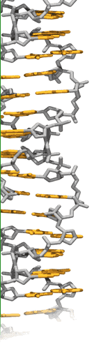
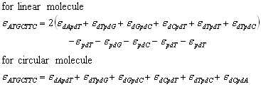

|
 |
KOHLER RESEARCH GROUP
Literature Recipes For Calculating Extinction Coefficients and Other Physical Properties of Short Oligonucleotides and DNA.
Compiled by Carlos E. Crespo-Hernández Preface The following report is intended as a general guide on the calculation of various useful physical properties of the DNA biopolymers. Emphasis was given to the available methods for calculated the extinction coefficient (EC) and concentration (C) of oligonicleotides, and single and double stranded DNA at 260 nm. In addition, web pages to order custom-made oligonucleotides and to automatically determined the physical properties of oligonicleotides, such as ECs, MW, C, and melting temperature were included. A. The Schepartz Lab Biopolymer Calculator recommended by Science Magazine, 22 May, 1998 Taken from: http://paris.chem.yale.edu/extinct.html Notes on use The calculator has been revised as of 7/21/98. Note that I have substantially changed the code for calculations, and though I have tested most of the functions for accuracy, I can't promise that all the functions are working properly-if you notice something funny, please email me and let me know. You can compare with the old version at the OLD FORM. Thanks. This form can be used to calculate the molecular weight, the extinction coefficient, the concentration, and the melting temperature of a single stranded nucleic acid. New as of 21 July is the ability to enter degenerate nucleic acid sequences. Using the standard degenerate code (N=ACGT, S=CG, W=AT, M=AC, K=GT, R=AG, Y=CT, V=ACG, H=ACT, D=AGT, B=GCT, replacing T with U for RNA), enter your sequence normally, and click on the degenerate DNA check box. All the numbers calculated, including mass, extinction coefficient, concentrations, and melting are for an average of the possibilities (ie W means a 50/50 ratio of A and T). Additionally, you can enter a protein sequence, and the form will calculate the molecular weight (using average isotopic mass), extinction coefficient, the concentration, and the formal charge. The calculator will accept X as an unknown amino acid, and will provide a mass based on the average of all 20 amino acids, not average statistical weighting in proteins. Charge and absorbance are not altered. For both sets, either nucleotide or amino acid composition and percentages are calculated. All numbers on the form are calculated independently, so if you are only interested in one set of numbers, the other default values will not affect your results. The numbers on calculated by this page are believed to be accurate, but you should know that anything you find on the web is not guaranteed. We use them and believe them, but that's not to say there aren't errors. Please let me know if you find any. The source code (written in perl) and html scripts for this program can be obtained free for academic users and at a modest price for companies. Contact rodgers@paris.chem.yale.edu for information. References: CRC Handbook of Biochemistry and Molecular Biology, 3rd ed. Molecular Cloning, A Laboratory Manual, 2nd ed. The Encyclopedia of Molecular Biology, 1st ed. Also see references for melting temperatures or extinction coefficients, both at Genosys (http://www.sigma-genosys.co.uk/oligos/frameset.html). B. Oligo Extinction Coefficient Calculator Taken from: http://www.scripps.edu/mb/gottesfeld/ExtCoeff.html This form can be used in two different ways. You can either enter your sequence (lower/upper case, spaces OK) or enter the number of each nucleotide (in addition to the absorbance, pathlength*, sample volume of stock measured, total volume in cuvette*, and total volume of your stock). If you choose to enter the number of each nucleotide, be sure that the sequence textbox is empty (the 'Clear Form' button will ensure this). Also, make sure to choose whether your oligo is DNA (the default) or RNA. Finally, the date does not appear upon loading, however it will show up once you click the 'Calculate' button. *Defaults have been set for these values, but they can be changed.
§Extinction coefficients for individual NMPs are based on: Tm calculation for DNA oligo is based on the following equation: Tm = 81.5° + 0.41°(%GC) - 675°/length of oligo C. Calculation procedure for extinction (absorption) coefficient of DNA Taken from: http://www.owczarzy.net/emethod.htm
Method is based on paper Cantor C.R., Warshaw M.M., Shapiro, H, Biopolymers, 9, 1059-1077 (1970). The data are also shown at Handbook
of Biochemistry and Molecular Biology, Volume 1: Nucleic Acids, Fasman,
G.D. editor, page 589, 3rd edition, CRC Press, 1975. Extinction
coefficient at 260 nm, 25 degrees of Celsius and neutral pH for the
single-strand DNA is determined by the nearest-neighbor method. For
example, the extinction coefficient of oligomer 5'-ATGCTTC-3' is 
The errors are probably no more than 4%. D. Extinction coefficients for common polynucleotides Taken from: http://www1.amershambiosciences.com
References
E. Calculating oligonucleotide concentrations The molar concentration of a oligonucleotide can be calculated based on the absorbance of the primer at 260 nm (A260) and the molar extinction coefficient for the oligonucleotide at this wavelength. The molar extinction coefficient for the oligonucleotide can be calculated by knowing the sequence of the oligonucleotide and then summing the molar extinction values for the individual bases which comprise the oligonucleotide. The individual bases have the following molar extinction coefficients at 260 nm:
For example, the oligonucleotide 5' TAGC 3' would have a molar extinction coefficient of 42,660 at 260 nm. Likewise, a 10 M solution of this oligonucleotide would give an absorbence of 0.427 at 260 nm. Taken from: Henderson JT, Benight AS, Hanlon S, A semi-micromethod for the determination of the extinction coefficients of duplex and single stranded DNA. Analytical Biochemistry 1992 Feb 14;201 (1):17-29 F. Calculations Amounts Of Nucleic Acids Taken from: http://omrf.ouhsc.edu/~frank/dnamole.html
O.D. Units:
Determining Concentrations:
Examples:
Determining Moles:
2. Spectrophotometric Quantitation of DNA or RNA Spectrophotometric measurements of nucleic acid solutions are typically taken at wavelengths of 260 nm and 280 nm. The A260 reading is used to determine the concentration of nucleic acid in solution. For a solution with an A260 = 1.0, the following approximations hold:
1 A260 unit of dsDNA = 50 µg/ml * For oligonucleotides, an A260 of 1.0 represents anywhere from 20 to 33 µg/ml with the actual conversion factor dependent on the length and base sequence of the oligonucleotide (1). The ratio between measurements at 260 nm and 280 nm provides an indication of the purity of a nucleic acid. In solution, pure DNA and RNA typically have A260/A280 ratios of 1.8 and 2.0, respectively. If the absorbance ratio is significantly less than the values above, the nucleic acid is probably contaminated with protein or phenol. Accurate quantification of a contaminated nucleic acid is not feasible without prior purification, and the efficacy of this can be established by the A260 /A280 ratio. Most of the lyophilized polynucleotides are sold as A260 units (2). For an approximation of quantity, use the conversion factors provided above to convert the A260 units into micrograms ¾ which must be known if a certain concentration is desired. 1 For a more accurate approximation, refer to Borer in the Handbook of Biochemistry and Molecular Biology, 3rd edition (G.D. Fasman, ed.) CRC Press, Cleveland, OH, page 589 (1975). 2 Unit definition: One unit is that quantity of oligonucleotide or polynucleotide which has an absorbance of 1.0 at a given wavelength when dissolved in 1 ml of buffer and measured in a 1 cm cuvette at 20 °C. The wavelength at which the absorbance is measured is printed on the Certificate of Analysis which accompanies the product. For nucleic acids, typically an absorbance is taken at 260 nm in 20 mM sodium phosphate (pH 7.0), 0.1 M NaCl. G. Quantification by UV Absorbance Introduction Oligonucleotides are most accurately and conveniently quantified by measuring the UV absorbance at 260 nm of a sample with a spectrophotometer. According to the Beer-Lambert law: A = eCl A = absorbance ( OD unit ) e = molar extinction coefficient ( M-1 cm-1 ) C = concentration ( M ) l = path length (cm), typically 1 cm The conditions are defined at a specific wavelength, temperature and buffer, all of which influence "e." Definition One OD unit is the amount of oligonucleotide which when dissolved in 1 ml of water results in an absorbance of 1 when measured at 260 nm in a 1 cm path-length cuvette. For 1 OD, the actual concentration can range from 39 µg/ml for a homopolymer of C, to 20 µg/ml for a homopolymer of A. Commonly, for practical experiments, 1 OD unit represents approximately 33 µg of single-stranded DNA or RNA with an equal mixture of the four bases. Calculation of Concentration According to the Beer-Lambert, the concentration of an oligo can be easily calculated once you know the absorbance of this oligo and its molar extinction coefficient. The OD value is obtained thanks to a proprietary robot which handles and calculates the total OD of your oligo. The purine and pyrimidine bases of DNA and RNA strongly absorb light with maxima near 260 nm. A useful approximation is e = 10,000 OD/mmole for each of the four bases. However the bicyclic purines, deoxyadenosine and deoxyguanosine, absorb more strongly (higher extinction coefficients) than the monocyclic pyrimidines, deoxycytidine and deoxythymidine. The precise molar extinction coefficient of each base is listed in Table 1 (units: OD/mmole) TABLE 1
Base stacking interactions in single strand oligos interfere, however, with the proper 'e'value of each base. The extinction coefficient value used in our calculation e (OD/mmole), is automatically obtained by the Proligo Primers & Probes SPARC workstation and is based on the exact nucleotide composition of each oligonucleotide. For example, the extinction coefficient of ACGT is the sum of the pairwise extinction coefficients: e (ACGT) = 2 x (e AC + e CG + e GT) - e C - e G The pairwise values are listed in TABLE 2 (units: OD/mmole) TABLE 2
The measured OD and calculated extinction coefficient are automatically converted into oligonucleotide concentration (µM) by the workstation, by using the Beer Lambert law. To obtain a concentration in µg/µl, the workstation calculates the molecular weight of the oligo according to its sequence (cf Table 3 for the molecular weights of each base), by using the following formula: Conc. µg/µl = conc. (M) x MW TABLE 3
CONCLUSION The following information is provided on the label of each oligonucleotide produced by Proligo Primers&Probes:
Commonly, for practical experiments, 1 OD unit represents approximately 33 µg of single-stranded DNA or RNA with an equal mixture of the four bases. Go to Oligo Calculation now for immediate calculation of the MW, epsilon value, or conversion data between OD - nmoles - mg! Taken from: H. Custom Oligos - UV Quantitation of DNA http://www.sigma-genosys.com/oligo_uvquant.asp DNA absorbs ultraviolet light due to its highly conjugated nature. DNA may thus be easily quantitated in a UV spectrometer. Typically, 1 OD260 (i.e. a solution having an absorbance of one unit at 260 nm with a path length of 1 cm) is said to correspond to a concentration of 30-37 ug per ml. This is for single stranded DNA with an equal mixture of each of the four bases. RNA or double stranded DNA have values of 40 and 50 mg per ml, respectively. For work with DNA longer than probes and primers, these assumptions are valid because the constituent bases are usually fairly evenly represented. With oligos, however, the base composition may be highly skewed. For instance, 1 OD of a sequence of all cytidines would correspond to 39.4 ug/ml and 1 OD of a sequence of all adenosites would correspond to 22.8 ug/ml. Since the composition and sequence of the oligo are usually known, this information may be used to calculate individualized values for more accurate quantitation. Values are calculated by either of two similar methods. The following equations is the simplest: 1. ug 1 -- = -------------------------------------------- ml (15400A+7400C+11500G+8700T) ------------------------------- 1000*(312A+288C+328G+303T-61) A, C, G, and T are simply the number of each base in the oligo. This equation simply averages the extinction coefficients (in L/mol-Table 1) of each base and divides by the molecular weight (g/mol). Table 1
The previous equation ignores the interactions of adjacent bases and a more accurate equation includes nearest neighbor interactions: 2. ug 1 -- = -------------------------------------------------- ml 2*Sum(Eab)-(E2+E3+...+E(n-2)+E(n-1)) -------------------------------------- 1000*(312A+288C+328G+303T-61) Where sum(Eab) is the sum of the pairwise extinction coefficients (Table 2) and the E values are the normal single extinction coefficients for each individual base. (Please note that the first and last bases'extinction coefficients, E1 and E2, are not subtracted.) The pairwise values can be found in Table 2. Both of these equations give good results. The difference between them is rarely more than a few ug per mil. Table 2.
Sigma-Genosys uses equation 2 to determine the extinction coefficient of your oligo. Examples For the sequence AGAG, equation (1) gives: Equation 1 Gives: ug 1 -- = ------------------------------------------ ml (15400*2+11500*2) --------------------- 1000*(312*2+328*2-61) = 22.7 Equation 2 Gives: ug 1 -- = ------------------------------------------ ml 2(12500+12600+12500)-(11500+15400) -------------------------------------- 1000*(312*2+328*2-61) = 25.4 Conclusion In our example, the results are similar to each other and quite different from the all-purpose value of 30 mg/ml. The degree of accuracy offered by the above equations may not be needed in normal circumstances. Where highly precise quantitation is required, they will yield excellent results. Sigma-Genosys Guaranteed Yields Please see the Sigma-Genosys Yields tech sheet for a listing of the yield guarantee for various oligos ordered from Sigma- Genosys. I. http://www.idtdna.com/program/catalog/Custom_Gene_Synt hesis.asp Custom Gene Synthesis *New Low Price* Synthetic Double-Stranded DNA Cloned into a Plasmid and Sequence Verified IDT’s Gene Synthesis Service Includes:
Specifics:
J. http://www.keydna.com/productsAndServices/microplateOligos. BioSource International, Inc has expanded capabilities for manufacturing microplate-formatted oligos in its Camarillo, California facilities. Intensive efforts have been made to ensure the same high quality and rapid turnaround that our customers have enjoyed over the past 8 years. Highly trained, capable personnel are now carefully monitoring orders electronically generated through our website, or emailed to dna@biosource.com. BioSource continues the tradition of offering a broad range of scales of synthesis (0.05-100 micromole), purifications (desalted, cartridge, HPLC and PAGE), and all commercially available modifications, reporters and quenchers. Microwell plate-formatted oligos can be either dried or resuspended to desired concentration and frozen. Certificates accompany each plated-product and detail individual oligo molecular weights, total concentration, picomoles/OD, extinction coefficients, melting temperatures and location confirmation in the plate, in addition to all customer-supplied information. Mass spec analysis is performed on random oligos to confirm quality and can be performed on entire plate as requested. Please contact us with inquiries at 1-800-242-0607 or email your orders to plates@biosource.com K. http://musom.marshall.edu/genomics/40new.htm MU DNA Core Facility Price List Custom DNA Synthesis Price List ---Updated December 12, 1999
* There will be a $50.00 setup charge for 10.0 µMole scale. Shipping Rates:
Please contact Don Primerano for volume discounts and new customer promotions. These prices are for the synthesis of oligonucleotides carried out using the four standard bases: dA, dC, dG, T, and Inosine. There are no set-up charges , hidden charges, or extra charges for mixed sites. There is no minimum volume order required. All oligos are fully deprotected, lyophilized, and ready for use. You will recieve a custom DNA Synthesis report for each oligo ordered. This report includes extinction coefficients, Tm, Td, base composition, and quantitation value of oligo (expresed in A260 Units). Others web pages for order oligonucleotides L.
* All companies listed are featured in the BioSupplyNet database; those listed above have multiple links to the web from the BioSupplyNet directory.
M.
* All companies listed are featured in the BioSupplyNet database; those listed above have multiple links to the web from the BioSupplyNet directory.
O. P. http://www.genosys.com/oligos/frameset.html Q. http://www.idtdna.com/program/catalog/Custom_Gene_Synt hesis.asp R. S.
http://bpf.med.harvard.edu/Pages/techs/O/IDT/I DT_Catalog_July_2000.html
T. |
|||||||||||||||||||||||||||||||||||||||||||||||||||||||||||||||||||||||||||||||||||||||||||||||||||||||||||||||||||||||||||||||||||||||||||||||||||||||||||||||||||||||||||||||||||||||||||||||||||||||||||||||||||||||||||||||||||||||||||||||||||||||||||||||||||||||||||||||||||||||||||||||||||||||||||||||||||||||||||||||||||||||||||||||||||||||||||||||||||||||||||||||||||||||||||||||||||||||||||||||||||||||||||||||||
| The Ohio State University Department of Chemistry | ||||||||||||||||||||||||||||||||||||||||||||||||||||||||||||||||||||||||||||||||||||||||||||||||||||||||||||||||||||||||||||||||||||||||||||||||||||||||||||||||||||||||||||||||||||||||||||||||||||||||||||||||||||||||||||||||||||||||||||||||||||||||||||||||||||||||||||||||||||||||||||||||||||||||||||||||||||||||||||||||||||||||||||||||||||||||||||||||||||||||||||||||||||||||||||||||||||||||||||||||||||||||||||||||||